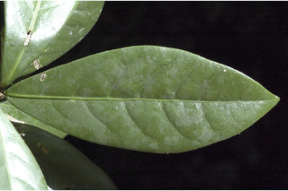
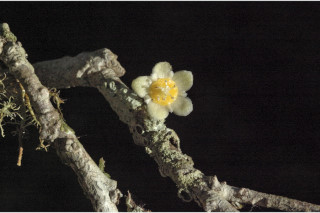
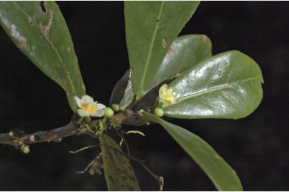
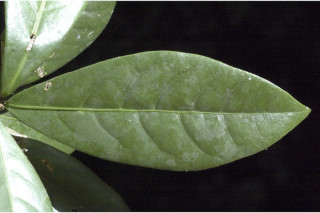
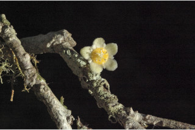
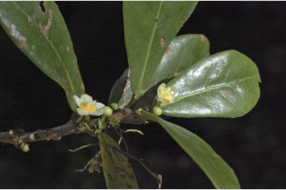
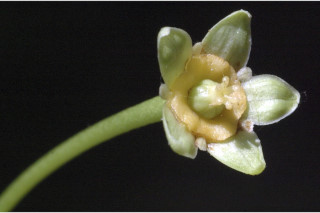
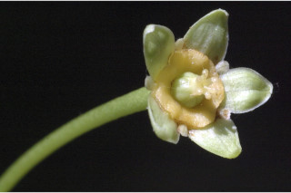
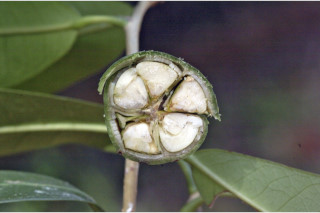
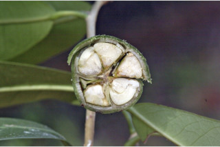

Botanical descriptions
ಸಸ್ಯದ ವೈಜ್ಞಾನಿಕ ವಿವರ
Botanical descriptions
மரங்களின் பண்புகள்
Habit
ಪ್ರಕೃತಿ
Habit
வளரியல்பு
Trees, up to 8 m tall.
8 ಮೀ. ಎತ್ತರದವರೆವಿಗೆ ಬೆಳೆಯುವ ಮರಗಳು
8 മീറ്റര് വരെ ഉയരമുളള മരങ്ങള്.
மரங்கள், 8 மீ. உயரம் வரை வளரக்கூடியது.
Trunk & Bark
ಕಾಂಡ ಮತ್ತು ತೊಗಟೆ
Trunk & Bark
தண்டு மற்றும் மரப்பட்டை
Bark brownish, lenticellate; blaze pink.
ತೊಗಟೆ ಕಂದು ಬಣ್ಣ ಹೊಂದಿದ್ದುವಾಯು ವಿನಿಮಯ ಬೆಂಡು ರಂಧ್ರ ಸಹಿತವಾಗಿರುತ್ತವೆ; ಕಚ್ಚು ಮಾಡಿದ ಜಾಗ ನಸುಗೆಂಪಾಗಿರುತ್ತದೆ.
ശ്വസനരന്ധ്രങ്ങളുളള, തവിട്ട ്നിറത്തിലുളള പുറംതൊലി; വെട്ട്പാടിന് പിങ്ക്നിറം.
மரத்தின் பட்டை ப்ரவுன் நிறமானது, லெண்டிசெல்லேட்; உள்பட்டை பிங்க் நிறமானது.
Branches and Branchlets
ಕವಲುಗಳು ಮತ್ತು ಕಿರುಕೊಂಬೆಗಳು
Branches and Branchlets
கிளைகள் & சிறிய நுனிக்கிளைகள்
Branchlets terete, glabrous.
ಕಿರುಕೊಂಬೆಗಳು ದುಂಡಾಗಿದ್ದು ರೋಮರಹಿತವಾಗಿರುತ್ತವೆ.
ഉരുണ്ട, അരോമിലമായ, ഉപശാഖകള്.
சிறிய நுனிக்கிளைகள் குறுக்குவெட்டுத் தோற்றத்தில் வளையமானது, உரோமங்களற்றது.
Leaves
ಎಲೆಗಳು
Leaves
இலைகள்
Leaves simple, alternate, spiral; stipules in pairs, caducous and leaving scar; petiole to 2 cm, swollen at both ends; lamina to 15 × 4 cm, variable, elliptic-lanceolate to oblanceolate, apex acute, base attenuate, subcoriaceous; midrib raised above; secondary_nerves 6-12 pairs; tertiary_nerves broadly reticulate.
ಎಲೆಗಳು ಸರಳವಾಗಿದ್ದು,ಪರ್ಯಾಯ ಮತ್ತು ಸುತ್ತು ಜೋಡನಾ ಮಾದರಿಯಲ್ಲಿರುತ್ತವೆ ; ಕಾವಿನೆಲೆಗಳು ಜೋಡಿಯಾಗಿರುತ್ತವೆ ಮತ್ತು ಉದುರಿ ಹೋಗುವಂತಹವು ಹಾಗೂ ಉದುರಿದ ಜಾಗದಲ್ಲಿ ಗುರುತುಗಳನ್ನು ಶೇಷವಾಗುಳಿಸುತ್ತವೆ;ತೊಟ್ಟುಗಳು 2 ಸೆಂ.ಮೀ. ಉದ್ದವಿದ್ದು, ಎರಡೂ ತುದಿಯಲ್ಲಿ ಊದಿಕೊಂಡಿರುತ್ತವೆ; ಪತ್ರಗಳು 15 X 4 ಸೆಂ ಮೀ. ವರೆಗಿನ ಗಾತ್ರ ಹೊಂದಿದ್ದು ವೈವಿಧ್ಯತೆ ಹೊಂದಿರುತ್ತವೆ; ಅಂಡವೃತ್ತ-ಭರ್ಜಿಯಾಕಾರದಿಂದ ಬುಗುರಿ-ಭರ್ಜಿ ಮಾದರಿಯವರೆಗಿನ ಆಕಾರ,ಚೂಪಾದ ತುದಿ, ಒಳಬಾಗಿದ ಬುಡ ಹೊಂದಿದ್ದು ಉಪ-ತೊಗಲನ್ನೋಲುವ ಮೇಲ್ಮೈ ಸಮೇತವಿರುತ್ತವೆ;ಮಧ್ಯ ನಾಳ ಪತ್ರದ ಮೇಲ್ಭಾಗದಲ್ಲಿ ಉಬ್ಬಿರುತ್ತದೆ; ಎರಡನೇ ದರ್ಜೆಯ ನಾಳಗಳು 6 ರಿಂದ 12 ಜೋಡಿಗಳಿರುತ್ತವೆ; ಮೂರನೇ ದರ್ಜೆಯ ನಾಳಗಳು ವಿಶಾಲ ಜಾಲಬಂಧ ನಾಳ ವಿನ್ಯಾಸದಲ್ಲಿರುತ್ತವೆ.
ലഘുവായ ഇലകള്, എകാന്തരക്രമത്തില് സര്പ്പിളമായി അടുക്കിയിരിക്കുന്നു; അടയാളം അവശേഷിപ്പിച്ചുകൊണ്ട് നേരത്തേ ഇളകി വീഴുന്ന അനുപര്ണ്ണങ്ങള് ജോഡികളായി ഉണ്ടാകുന്നു; രണ്ടറ്റവും വീര്ത്ത ഇലഞെട്ടിന് 2 സെ.മീ വരെ നീളം; പത്രഫലകത്തിന് 15 സെ.മീ വരെ നീളവും 4 സെ.മീ വരെ വീതിയും ദീര്ഘവൃത്താകാര-കുന്താകാരംതൊട്ട് അപകുന്താകാരം വരെ ആകൃതി, പലവിധത്തിലുമാണ്. പത്രാഗ്രം നിശിതവും, പത്രധാരം ചെറിയ അകവളവോടെ നേര്ത്തവസാനിക്കുന്നതും ആണ്; ഉപചര്മ്മില പ്രകൃതം; മുഖ്യസിര മുകളില് പരന്നതാണ്; 6 മുതല് 12 വരെ ജോഡി ദ്വിതീയ ഞരമ്പുകള്; വീതിയേറിയ ജാലിതമായ ത്രിതീയ ഞരമ്പുകള്.
இலைகள் தனித்தவை, மாற்றுஅடுக்கமானவை, சுழல் போன்று அமைந்தவை; இலையடிச்செதில்கள் ஒர் ஜோடி, எளிதில் உதிரக்கூடியது, இலைக்காம்பு 2 செ.மீ. வரை நீளமானது, காம்பின் இருமுனைகளும் உப்பியது; இலை அலகு 15 X 4 செ.மீ., வெவ்வேறு வடிவுடையது. நீள்வட்டம்-ஈட்டி வடிவம் முதல் தலைகீழ் ஈட்டி வடிவானது, அலகின் நுனி கூரியது, அலகின் தளம் அட்டனுவேட், சப்கோரியேசியஸ்; மையநரம்பு அலகின் மேற்பரப்பைவிட சற்று மேல் எழும்பியது; இரண்டாம் நிலை நரம்புகள் 6-12 ஜோடிகள்; மூன்றாம் நிலை நரம்புகள் அகன்ற வலைப்பினனலுடையது.
Inflorescence / Flower
ಪುಷ್ಪಮಂಜರಿ/ಹೂಗಳು
Inflorescence / Flower
மஞ்சரி / மலர்கள்
Flowers unisexual, dioecious; male flowers in axillary clusters, short pedicellate, petals white, disk yellow; female solitary, axillary, long pedicellate, petals yellowish and small, disk yellow.
ಹೂಗಳು ಏಕಲಿಂಗಿಗಳು; ಗಂಡು ಮತ್ತು ಹೆಣ್ಣು ಹೂಗಳು ಪ್ರತ್ಯೇಕ ಸಸ್ಯಗಳಲ್ಲಿರುತ್ತವೆ; ಗಂಡು ಹೂಗಳು ಅಕ್ಷಾಕಂಕುಳಿನಲ್ಲಿನ ಗುಚ್ಛದಲ್ಲಿರುತ್ತವೆ ಹಾಗೂ ಚಿಕ್ಕ ತೊಟ್ಟುಗಳನ್ನು ಹೊಂದಿರುತ್ತವೆ;ಪುಷ್ಪಗಳ ದಳಗಳು ಬಿಳಿ ಬಣ್ಣದವು;ಬಿಂಬ ಹಳದಿಯಾಗಿರುತ್ತದೆ;ಹೆಣ್ಣು ಹೂಗಳು ಒಂಟಿಯಾಗಿದ್ದು, ಅಕ್ಷಾಕಂಕುಳಿನಲ್ಲಿದ್ದು ಉದ್ದವಾದ ತೊಟ್ಟುಗಳನ್ನು ಹೊಂದಿದ್ದು ಹಳದಿ ಬಣ್ಣದಿಂದ ಕೂಡಿದ ಕಿರು ಗಾತ್ರದ ದಳಗಳ ಸಹಿತವಿರುತ್ತವೆ; ಬಿಂಬ ಹಳದಿ ಬಣ್ಣ ಹೊಂದಿರುತ್ತದೆ.
പൂക്കള് ഏകലിംഗികളാണ്, ഡയീഷ്യസും; ചെറുതണ്ടും മഞ്ഞ ഡിസ്കും ഉളള വെളുത്ത ആണ്പൂക്കള് കക്ഷങ്ങളില് കൂട്ടമായുണ്ടാകുന്നു; നീളന്തണ്ടും, മഞ്ഞ ഡിസ്കും, ചെറിയ മഞ്ഞ ദളങ്ങളുമുളള, പെണ്പൂക്കള് കക്ഷങ്ങളില് ഒറ്റയായി ഉണ്ടാകുന്നു.
மலர்கள் ஓர்பாலானவை, ஈரகம் கொண்டவை; ஆண்மலர்கள் இலைக்கோணங்களில் கூட்டமாக காணப்படுபவை, சிறிய காம்புடையது, அல்லி இதழ்கள் வெள்ளை நிறமானது; பெண்மலர்கள் தனித்தவை இலைக்கோணங்களில் காணப்படுபவை, நீண்ட காம்புடையது, அல்லி இதழ்கள் மஞ்சள் நிறமானது மற்றும் சிறியது, பூத்தட்டு மஞ்சள் நிறமானது.
Fruit and Seed
ಕಾಯಿ /ಬೀಜ
Fruit and Seed
கனி / விதை
Capsule, compressed, globose, 2 × 3.2 cm, woody, long pedicellate; seeds 2 per cell.
ಸಂಪುಟ ಫಲಗಳು ಸಂಕುಚಿತವಾಗಿದ್ದು 2 X 3.2 ಸೆಂ.ಮೀ. ಗಾತ್ರದಲ್ಲಿದ್ದು ಗೋಳಾಕಾರದಲ್ಲಿರುತ್ತವೆ ಹಾಗೂ ದಾರುವಿನಂತಿದ್ದು ತೊಟ್ಟುಗಳ ಸಮೇತವಿರುತ್ತವೆ; ಪ್ರತಿ ಕೋಶದಲ್ಲಿ 2 ಬೀಜಗಳಿರುತ್ತವೆ.
ഓരോ അറയിലും 2 വിത്തുവീതമുളള കായ, നീളന് തണ്ടുളള, 2 സെ.മീ നീളവും 3.2 സെ.മീ വീതിയുമുളള ഉറപ്പേറിയ, പരന്ന, ഗോളാകാര കാപ്സ്യൂള് ആണ്.
வெடிகனி (கேப்சூல்), கோளவடிவானது, சிறிது தட்டையானது, 2 X 3.2 செ.மீ., தடித்தது, நீண்ட இலைக்காம்புடையது; ஒர் அறையில் 2 விதைகளையுடையது.
Literatures
ಗ್ರಂಥ ಸೂಚಿ
Literatures
சான்று ஏடு
Linnaea 32: 78. 1863; Gamble, Fl. Madras 2: 1283. 1993 (re. ed); Sasidharan, Biodiversity documentation for Kerala- Flowering Plants, part 6: 408. 2004; Saldanha, Fl. Karnataka 2: 114. 1996
Linnaea 32:78.1863;Gamble, Fl. Madras2:1283.1993(rep.ed.); Sasidharan, Biodiversity documentation for Kerala – Flowering plants, part 6, 408.2004;Saldanha, Fl. Karnataka 2:114.1996.
Linnaea 32: 78. 1863; Gamble, Fl. Madras 2: 1283. 1993 (re. ed); Sasidharan, Biodiversity documentation for Kerala- Flowering Plants, part 6: 408. 2004; Saldanha, Fl. Karnataka 2: 114. 1996
Linnaea 32: 78. 1863; Gamble, Fl. Madras 2: 1283. 1993 (re. ed); Sasidharan, Biodiversity documentation for Kerala- Flowering Plants, part 6: 408. 2004; Saldanha, Fl. Karnataka 2: 114. 1996


 





 

 
